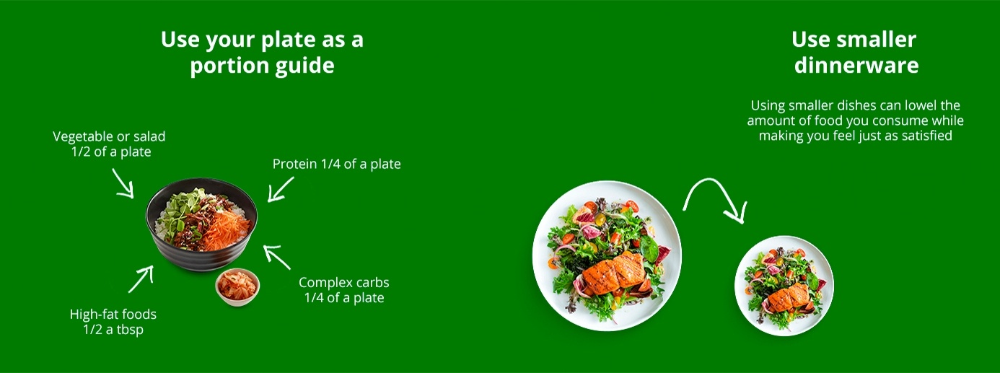
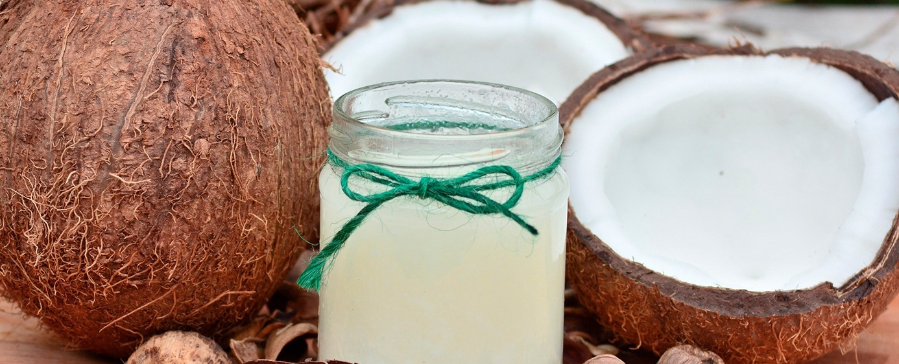
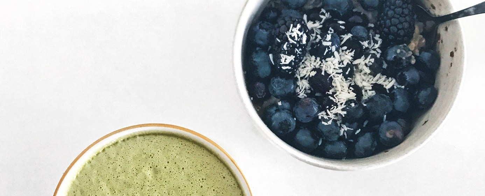

Populárne články

Ako odmerať veľkosť porcií pomocou rúk
Obezita je narastajúcou epidémiou, keďže viac ľudí než kedykoľvek predtým bojuje s udržaním svojej hmotnosti pod kontrolou. Predpokladá sa, že väčšie porcie jedla prispievajú k prejedaniu sa a nežiaducemu priberaniu. Výskumy naznačujú, že množstvo skonzumovaného jedla ovplyvňuje viacero faktorov. Ľudia majú tendenciu zjesť takmer všetko, čo si naložia na tanier. Preto môže kontrola veľkosti porcií pomôcť predísť nadmernému príjmu potravy. Prinášame vám 9 tipov, ako odmerať a kontrolovať veľkosť porcií – či už doma, alebo mimo domova.

1. Používajte menší jedálenský riad
Dôkazy naznačujú, že veľkosti tanierov, lyžíc a pohárov môžu nevedome ovplyvniť množstvo jedla, ktoré človek zje. Napríklad používanie veľkých tanierov môže spôsobiť, že jedlo bude vyzerať menšie, čo často vedie k prejedaniu sa. V jednej štúdii ľudia používajúci veľkú misku zjedli o 77 % viac cestovín ako tí, ktorí používali stredne veľkú misku. V inej štúdii si nutriční experti naservírovali o 31 % viac zmrzliny, keď dostali väčšie misky, a o 14,5 % viac, keď dostali väčšie servírovacie lyžice.
Je zaujímavé, že väčšina ľudí, ktorí zjedli viac v dôsledku používania veľkého riadu, si vôbec neuvedomila zmenu veľkosti porcie. Preto môže výmena bežného taniera, misky či servírovacej lyžice za menšiu alternatívu zmenšiť porciu jedla a zabrániť prejedaniu. Väčšina ľudí sa cíti rovnako sýta, či už jedla z menšieho, alebo z veľkého riadu.
2. Používajte svoj tanier ako pomôcku na určenie veľkosti porcie
Ak vás predstava odmeriavania alebo váženia jedla neláka, skúste použiť tanier či misku ako pomôcku na kontrolu veľkosti porcií. Pomôže vám to určiť optimálny pomer makroživín pre nutrične vyvážené jedlo.
Orientačné usmernenie pre každé jedlo je:
- Zelenina alebo šalát: Pol taniera
- Kvalitné bielkoviny: Štvrtina taniera – sem patrí mäso, hydina, ryby, vajcia, mliečne výrobky, tofu, fazuľa a strukoviny.
- Komplexné sacharidy: Štvrtina časti taniera — napríklad celozrnné obilniny a škrobová zelenina
- Potraviny s vysokým obsahom tuku: Pol polievková lyžica (7 gramov) — vrátane syra, olejov a masla
Majte na pamäti, že ide len o orientačný návod, keďže každý človek má iné stravovacie potreby. Napríklad ľudia, ktorí sú fyzicky aktívnejší, zvyčajne potrebujú viac jedla. Keďže zelenina a šaláty majú prirodzene nízky obsah kalórií, no zároveň sú bohaté na vlákninu a ďalšie živiny, ich konzumácia vám môže pomôcť vyhnúť sa prejedaniu sa kaloricky výdatnými jedlami. Ak potrebujete ďalšiu pomoc, niektorí výrobcovia ponúkajú taniere navrhnuté na kontrolu veľkosti porcií.
3. Použite svoje ruky ako pomôcku na určenie veľkosti porcie
Ďalším spôsobom, ako odhadnúť vhodnú veľkosť porcie bez použitia pomôcok na meranie, je jednoducho využiť vlastné ruky. Keďže veľkosť rúk zvyčajne zodpovedá veľkosti tela, ľudia väčšieho vzrastu, ktorí potrebujú viac potravy, majú spravidla aj väčšie ruky. Orientačné pravidlo pre každé jedlo je nasledovné:
- Potraviny s vysokým obsahom bielkovín: Porcia veľkosti dlane pre ženy a dve porcie veľkosti dlane pre mužov – napríklad mäso, ryby, hydina a fazuľa
- Zelenina a šaláty: Porcia veľkosti pästi pre ženy a dve porcie veľkosti pästi pre mužov
- Potraviny s vysokým obsahom sacharidov: Jedna porcia vo veľkosti dlane pre ženy a dve pre mužov – napríklad celozrnné obilniny a škrobová zelenina
- Potraviny s vysokým obsahom tuku: Jedna porcia veľkosti palca pre ženy a dve pre mužov – napríklad maslo, oleje a orechy
4. Pri stravovaní vonku požiadajte o polovičnú porciu
Reštaurácie sú známe tým, že podávajú veľké porcie. V skutočnosti sú reštauračné porcie v priemere približne 2,5-krát väčšie než štandardné porcie – v niektorých prípadoch dokonca až osemnásobne väčšie. Ak jete v reštaurácii, môžete požiadať o polovičnú porciu alebo detské jedlo. Tým ušetríte značné množstvo kalórií a predídete prejedaniu. Ďalšou možnosťou je podeliť sa o jedlo s niekým iným, prípadne si namiesto hlavného chodu objednať predjedlo a prílohu. Medzi ďalšie tipy patrí objednanie šalátu alebo zeleniny ako prílohy, požiadavka na podávanie omáčok a dresingov zvlášť, a tiež vyhýbanie sa reštauráciám typu „bufet“ či „jedzte, koľko vládzete“, kde je veľmi ľahké skonzumovať príliš veľa jedla.
5. Každé jedlo začnite pohárom vody
Vypitie pohára vody približne 30 minút pred jedlom prirodzene pomáha pri kontrole veľkosti porcií. Voda zaplní žalúdok, vďaka čomu budete pociťovať menší hlad. Dostatočná hydratácia vám navyše pomôže lepšie rozlíšiť, či cítite hlad alebo smäd. Jedna štúdia zameraná na ľudí v strednom a vyššom veku ukázala, že vypitie 500 ml vody pred každým jedlom viedlo v priebehu 12 týždňov k výraznejšiemu úbytku hmotnosti (o 44 % vyššiemu), čo bolo s najväčšou pravdepodobnosťou spôsobené zníženým príjmom potravy. Podobne, keď starší ľudia s nadváhou či obezitou vypili 500 ml vody 30 minút pred jedlom, prijali o 13 % menej kalórií, a to bez toho, aby sa o to vedome snažili. V inej štúdii, ktorej sa zúčastnili mladí muži s normálnou telesnou hmotnosťou, viedla konzumácia podobného množstva vody tesne pred jedlom k silnejšiemu pocitu sýtosti a nižšiemu príjmu potravy. Vypitie pohára vody pred každým jedlom teda môže pomôcť predchádzať prejedaniu sa a uľahčiť kontrolu veľkosti porcií.
6.Rob to pomaly
Rýchle jedenie znižuje vašu vnímavosť voči pocitu sýtosti, čím sa zvyšuje pravdepodobnosť, že sa prejete. Keďže mozgu môže trvať približne 20 minút, kým po jedle zaregistruje, že ste sýti, spomalenie tempa môže znížiť celkové množstvo skonzumovanej potravy.
Zhrnutie
Nežiaduce priberanie na váhe môže mať pôvod vo veľkých porciách jedla. Existuje však mnoho praktických krokov, vďaka ktorým môžete veľkosť porcií dostať pod kontrolu. Tieto jednoduché zmeny sa osvedčili pri zmenšovaní porcií, pričom neutrpí chuť jedla ani pocit sýtosti. K zníženiu rizika prejedania sa môže prispieť napríklad odmeriavanie porcií, používanie menšieho riadu, pitie vody pred jedlom či pomalé jedenie. V konečnom dôsledku je kontrola veľkosti porcií účinným riešením, ktoré zlepšuje kvalitu života a môže predchádzať nárazovému prejedaniu.

Stručný sprievodca intuitívnym stravovaním
Prečítať článok
Vodná bilancia, význam správnej hydratácie
Prečítať článok
Ako kúpiť to najlepšie
Nohavice na jogu
Prečítať článok
Tipy na čisté stravovanie
S obmedzeným rozpočtom
Prečítať článok

Ako byť viac
Disciplinovaný
Prečítať článok

5 wellness trendov, ktoré si zamilujete
Uvidíme sa v roku 2019
Prečítať článok

Kokosový olej na vlasy, ktoré
Žiari
Prečítať článok
